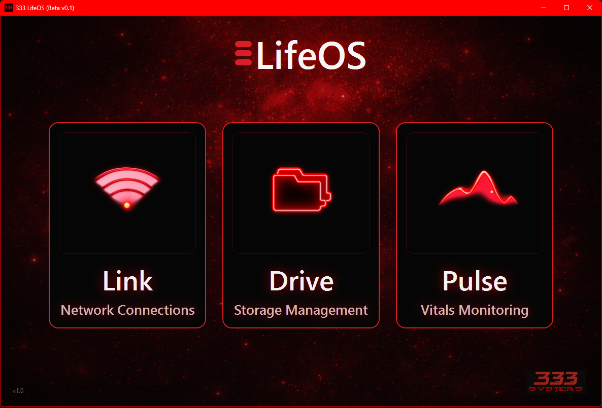
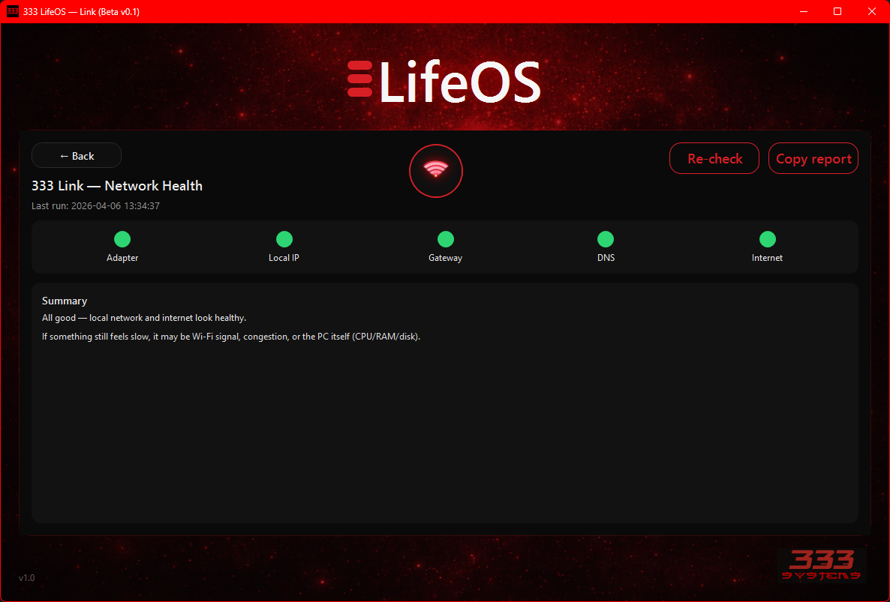
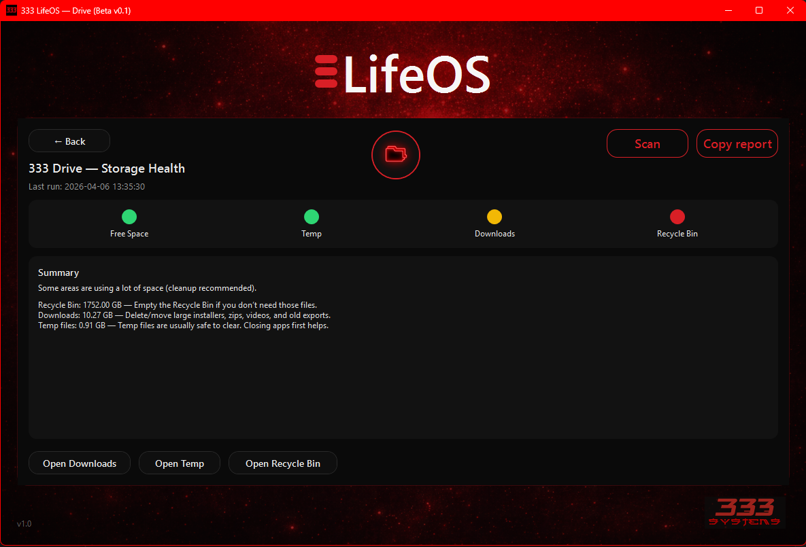
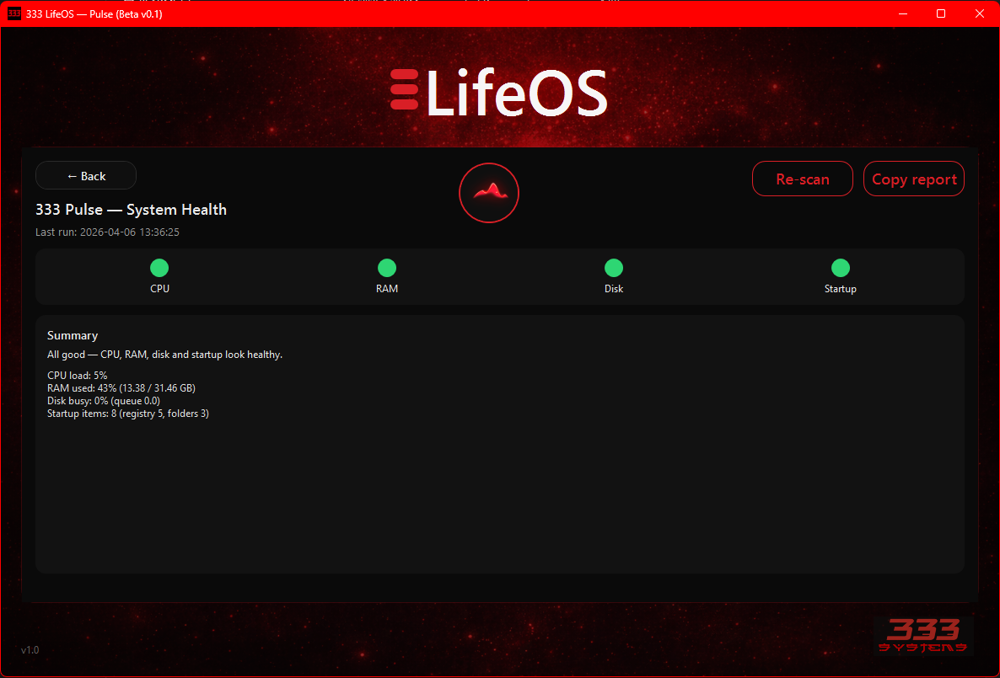

Simple tools that solve real everyday problems.
LifeOS is a collection of lightweight helper tools focused on clarity, diagnostics and practical improvements to everyday workflows.
LifeOS overview
A lightweight desktop utility platform built around practical modules for diagnostics, system visibility and everyday workflow improvements.

LifeOS Hub
The central launch point for LifeOS modules, bringing practical tools together in one clean desktop interface.

Network health
Quick diagnostics of connectivity, DNS, latency and internet reachability.

Storage insights
Identify disk usage hotspots, temp files, download clutter and simple opportunities to reclaim space.

System monitoring
Simple CPU, RAM and system health indicators without the noise of full enterprise monitoring tools.
Available now
LifeOS is available as a Windows beta build. This demonstrates the modular desktop utility approach and will continue evolving through rapid iteration.
Suggest a useful tool
Got an idea for a simple utility that would genuinely help day-to-day workflows? Send it through and help shape future LifeOS modules.
Utility over hype.
Clean tools. Fast insights. No unnecessary complexity.